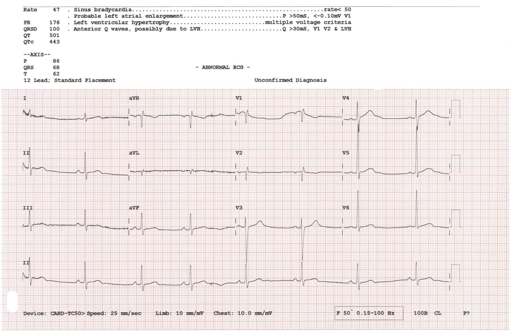

Página 8 · Parte F · Débito sobe, pressão cai — a equação do 2º trimestre
DC +40–50%
O coração da gestante bombeia muito mais sangue — e ainda assim a pressão cai no 2º trimestre.
Sopro sistólico leve e síndrome hiperdinâmica
Ausculta da gestante: sopro sistólico típico, em geral 1 a 2 cruzes (+/4 a ++/4) — comum, não absurdo. Explica-se no contexto da síndrome hiperdinâmica (volume ↑ + componente de anemia dilucional).
A pressão arterial tende a ser mais baixa do que fora da gestação.
PA = RVP × DC — a fórmula que organiza
PA = resistência vascular periférica (RVP) × débito cardíaco (DC). Com a equação no bolso, a “paradoxo” (débito sobe e pressão cai) deixa de ser mágica.
Placenta-fístula, invasão trofoblástica e DC +40–50%
A placenta funciona como fístula (leito de baixa resistência) e joga a RVP para baixo. A invasão trofoblástica abre a boca dos vasos da artéria uterina — RVP materna tende a cair. Para equilibrar a equação, o débito cardíaco sobe.
O DC aumenta bem, em torno de 40–50% [086] .
CAIXA-NUANÇA (laudo): literatura também descreve 30–50% (SBC ~40% médio). Pico no 2ºT / início do 3ºT.
No segundo trimestre há o maior aumento do DC, mas existe limite — o DC não sobe indefinidamente. A RVP continua caindo além do teto compensatório do DC. Resultado: no segundo trimestre, principalmente a PA diastólica, fica mais baixinha que a pré-gestacional.
Eco do Doppler de sofrimento fetal crônico: semana a semana a resistência da umbilical deve cair — leitura da função placentária; encaixa com a lógica de RVP. Algoritmo de Doppler = fora.
HAS crônica: às vezes suspende dose baixa — nunca zera multi-droga no escuro
Ponte doença: Hipertensa crônica em dose baixinha de anti-hipertensivo: ao engravidar, às vezes se suspende e monitora no primeiro trimestre, porque a PA tende a cair. Se usa múltiplas medicações, não se tira tudo; ajusta-se para anti-hipertensivos compatíveis com a gravidez (lista/algoritmo = doenças clínicas / A16).
PA um pouco mais baixa é normal; manter hidratação e cuidar de episódios de hipotensão.
evita investigar sopro “valvopatia de cara” e evita manejo cego de anti-hipertensivo no 1ºT.
PA = RVP×DC; RVP↓ (fístula) + DC↑ 40–50%; diastólica↓ no 2ºT; sopro +/++ comum.
o mesmo volume e a compressão de cava explicam o edema — e separam o que é fisiológico do que grita pré-eclâmpsia.

P8 cardiovascular gestacional
12-lead electrocardiogram measured in clinical practice. Photo: Peterhcharlton, 2023. Licensed under CC BY 4.0. Source: https://commons.wikimedia.org/wiki/File:12_lead_ECG.jpg
Quiz
Se o DC sobe ~40–50% e a PA diastólica cai no 2ºT, a melhor leitura é:
- Virada: PA = RVP × DC; fístula placentária.
- (A) inverte RVP. (C) patologiza o fisiológico. (D) mistura eixos.
- Por que cair na A: “mais volume = mais pressão” no senso comum.
Sopro sistólico +/++ na gestante assintomática:
- Virada: hiperdinâmico ≠ doença valvar automática.
- (A) superdiagnóstico. (C)/(D) sem nexo.
- Por que cair na A: qualquer sopro “assusta” fora de contexto.